2025_islabCTF_writeups
身為北科 islab Web 狗的成員之一，這次比賽必須參加的吧
但是沒人跟我說後面會有這麼多賽棍進來阿喂，好啦扣掉他們的話，這次應該是第四名(自我安慰
這次共解了12題
Misc 1 題，Forensics 1 題，OSINT 3 題，Crypto 1 題，Reverse 3 題，Web 3 題
(打到這裡突然不想寫 writeups 了QQ)
但我就賤，所以繼續，先從簡單的開始
Misc
Welcome
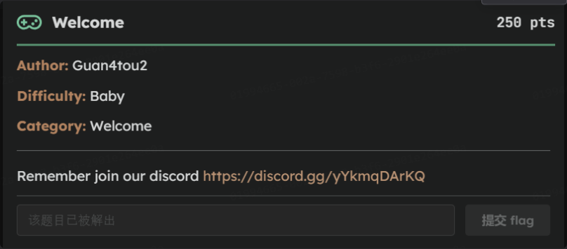
點開連結是這次新生盃的 DC 伺服器，啥也沒有
後來去點每個頻道，發現在 2025 新生盃 CTF 的 discuss 就有 flag 了
Forensics
File Stealer

下載檔案後是一個 .img 檔(磁碟鏡像)，用 windows 打不開所以轉戰 kali
點兩下 .img 檔掛載後看到一個 readme.txt 的檔案，內容是:
Public area. Nothing interesting here. But you might need this later: ‘is1ab’.
hmmm，不太理解，只好先用 file 查看檔案格式
┌──(kali㉿kali)-[~/isLab/2025_CTF/Forensics]
└─$ fdisk -l file_stealer.img
Disk file_stealer.img: 64 MiB, 67108864 bytes, 131072 sectors
Units: sectors of 1 * 512 = 512 bytes
Sector size (logical/physical): 512 bytes / 512 bytes
I/O size (minimum/optimal): 512 bytes / 512 bytes
Disklabel type: dos
Disk identifier: 0x50f5b986
Device Boot Start End Sectors Size Id Type
file_stealer.img1 2048 67583 65536 32M e W95 FAT16 (LBA)
file_stealer.img2 67584 129023 61440 30M 1e Hidden W95 FAT16 (LBA)
再用 fdisk 檢查分割資訊
┌──(kali㉿kali)-[~/isLab/2025_CTF/Forensics]
└─$ fdisk -l file_stealer.img
Disk file_stealer.img: 64 MiB, 67108864 bytes, 131072 sectors
Units: sectors of 1 * 512 = 512 bytes
Sector size (logical/physical): 512 bytes / 512 bytes
I/O size (minimum/optimal): 512 bytes / 512 bytes
Disklabel type: dos
Disk identifier: 0x50f5b986
Device Boot Start End Sectors Size Id Type
file_stealer.img1 2048 67583 65536 32M e W95 FAT16 (LBA)
file_stealer.img2 67584 129023 61440 30M 1e Hidden W95 FAT16 (LBA)
可以發現有兩個 FAT16 分區:
- Partition 1 (32MB) → 有 readme.txt
- Partition 2 (30MB, Hidden FAT16) → 隱藏分區，應該藏有真正的內容
接下來去計算它的 offset，然後去掛載隱藏起來的分區
sudo mount -o ro,loop,offset=34603008 file_stealer.img /mnt/hidden
34603008 的由來是因為 file_stealer.img2 的起始 sector 是 67584，加上每個 sector 大小 = 512 bytes，而 mount 的 offset 參數為 byte offset，所以最後 67584 * 512 = 34603008
接著在隱藏分區中發現一個名為 DCIM_0001.TGZ 的壓縮檔，老樣子先去解壓縮
tar -xzvf DCIM_0001.TGZ
得到一個 doc.txt ，點開就是 flag 了
OSINT
身為 OSINT 專家竟然有一題沒解出來，在此向黃廷翰學長道歉，下次我會認真聽他報告QQ
I love free music
點開題目給的檔案是一張圖片
原本朝著旁邊那棟看起來有點特色的建築找，但出現的竟然是甚麼日本飯店???
突然靈光一閃，看到右下角有一個 「織」 字，馬上轉戰
找到一個很明顯的活動叫「織‧府中 — 2025 新北永續風格日」，找了一下節目表
題目有說是樂團名轉成 md5，加上看圖片天色應該是傍晚，所以猜是宋徳鶴
去 md5 轉換網站
Information Security
這題 second blood，呀呼
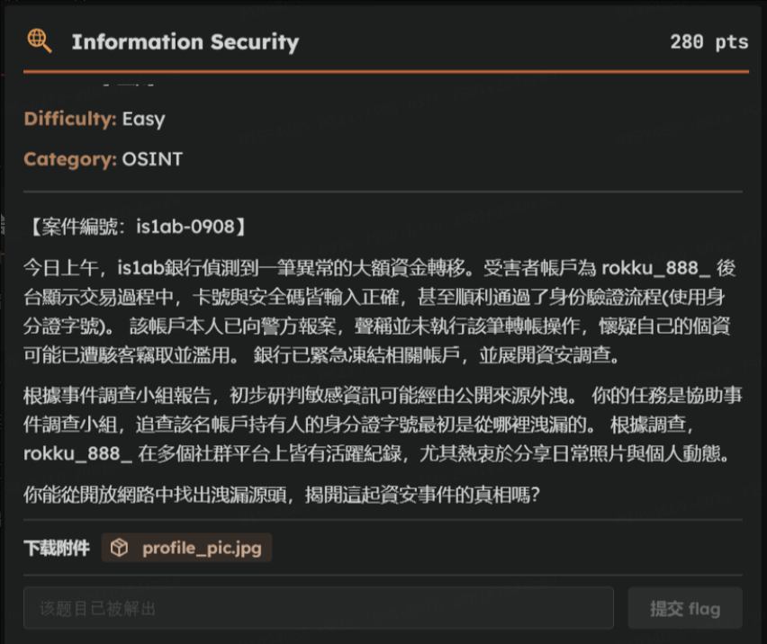
點開題目給的檔案是一張圖片
題目說 rokku_888_ 在多個社群平台上皆有活躍紀錄，都提示成這樣了當然是從 IG 找阿(x
宜鴻學長很抱歉以這樣的方式初次認識你，但題目好玩，讚
去偷窺他的精選限動，發現有一張 iPAS 資安工程師中級證照
OSINT 別人20年(?，直覺那裡一定有東西(其實我只是想偷窺他的身分證字號
開啟美圖秀秀，曝光、亮度拉好拉滿
Feedback
就填問卷，但我忘記存 flag 了，抱歉新手小白沒經驗，下次會記得
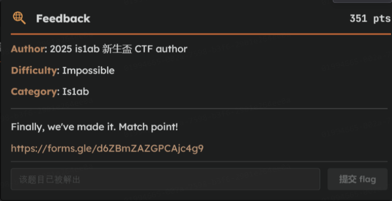
圖片證明我有填
Crypto
Crypto 依舊想 cry
MITM
這題 third blood
server(2).py 程式碼
#!/usr/bin/env python3
import socket
import os
import time
import threading
import hashlib
import secrets
from Crypto.Cipher import AES
from Crypto.Util.Padding import pad
from Crypto.Random import get_random_bytes
# --- Server Settings ---
HOST = '0.0.0.0'
PORT = 1337
FLAG_FILE = 'flag.txt'
def get_flag():
if not os.path.exists(FLAG_FILE):
return "flag{file_not_found_on_server}"
with open(FLAG_FILE, 'r') as f:
return f.read().strip()
def handle_connection(conn, addr):
print(f"[+] New connection from {addr[0]}:{addr[1]}, for which a separate thread has been created.")
try:
# --- Beginning of eavesdropping scenario ---
conn.sendall(b"----- MITM Attack Initialized. Intercepting encrypted channel -----\n\n")
time.sleep(1)
# --- 1. Diffie-Hellman parameters ---
p = 155214169224186174245759019817233758959712483609876556421679567759735878173206273314271380424223420051598278563855517852997101246947883176353747918435174813511975576536353646684036755728974423538143090186411163821396091652013002565116673426504500657692938270440503451481091007910872038288051399770068237950977
g = 5
# --- 2. Initial Handshake ---
conn.sendall(b"Alice: Hello Bob, initiating secure channel.\n")
time.sleep(1)
conn.sendall(b"Bob: Hello Alice, I am ready.\n\n")
time.sleep(1)
# --- 3. Key Exchange ---
# Alice generates private key a and calculates public key A
alice_private_key = secrets.randbelow(p - 101) + 100 # Ensure a >= 100
alice_public_key = pow(g, alice_private_key, p)
conn.sendall(f"Alice -> Bob (Public Key): {alice_public_key}\n".encode('utf-8'))
time.sleep(1)
# Bob generates private key b and calculates public key B
bob_private_key = secrets.randbelow(p - 101) + 100 # Ensure b >= 100
bob_public_key = pow(g, bob_private_key, p)
conn.sendall(f"Bob -> Alice (Public Key): {bob_public_key}\n\n".encode('utf-8'))
time.sleep(1)
# --- 4. Calculate shared secret & generate symmetric key ---
# The server simulates Alice and calculates the shared secret (g^b)^a mod p
shared_secret_alice = pow(bob_public_key, alice_private_key, p)
# The server also simulates Bob to calculate the shared secret (g^a)^b mod p
shared_secret_bob = pow(alice_public_key, bob_private_key, p)
# Server-side verification to ensure the algorithm is implemented correctly
if shared_secret_alice == shared_secret_bob:
print("[V] Verification successful! Computed the same shared secret.")
# Convert the shared secret (a large number) to a 32-byte key using SHA-256
secret_bytes = shared_secret_alice.to_bytes((shared_secret_alice.bit_length() + 7) // 8, byteorder='big')
symmetric_key = hashlib.sha256(secret_bytes).digest()
# --- 5. Use AES-256-CBC to encrypt and send the message ---
conn.sendall(b"Alice: Message is encrypted. Here it is.\n")
# Encrypt Alice's message
flag = get_flag()
alice_part = flag[:10]
plaintext_alice = f"Great. The first part is: {alice_part}".encode('utf-8')
iv_alice = get_random_bytes(AES.block_size) # Generate a random 16-byte IV
cipher_alice = AES.new(symmetric_key, AES.MODE_CBC, iv_alice)
ciphertext_alice = cipher_alice.encrypt(pad(plaintext_alice, AES.block_size))
encrypted_message_alice = iv_alice.hex() + ciphertext_alice.hex()
conn.sendall(f"Alice -> Bob (Encrypted): {encrypted_message_alice}\n".encode('utf-8'))
time.sleep(1)
# Encrypt Bob's message
bob_part = flag[10:]
plaintext_bob = f"Perfect! I have the rest. It's: {bob_part}".encode('utf-8')
iv_bob = get_random_bytes(AES.block_size) # A new IV must be used for each encryption
cipher_bob = AES.new(symmetric_key, AES.MODE_CBC, iv_bob)
ciphertext_bob = cipher_bob.encrypt(pad(plaintext_bob, AES.block_size))
encrypted_message_bob = iv_bob.hex() + ciphertext_bob.hex()
conn.sendall(f"Bob -> Alice (Encrypted): {encrypted_message_bob}\n\n".encode('utf-8'))
# --- End of eavesdropping scenario ---
conn.sendall(b"----- Target communication terminated. Eavesdropping channel closed -----\n")
except Exception as e:
print(f"[!] Error handling connection from {addr[0]}:{addr[1]}: {e}")
finally:
conn.close()
print(f"[-] Connection with {addr[0]}:{addr[1]} closed, thread terminated.")
def main():
with socket.socket(socket.AF_INET, socket.SOCK_STREAM) as s:
# Allow address reuse to avoid "Address already in use" errors
s.setsockopt(socket.SOL_SOCKET, socket.SO_REUSEADDR, 1)
s.bind((HOST, PORT))
s.listen()
print(f"[*] Multi-threaded server listening on {HOST}:{PORT}")
while True:
# Wait for and accept new connections
conn, addr = s.accept()
# Create a new thread for this connection
client_thread = threading.Thread(target=handle_connection, args=(conn, addr))
# Start the thread
client_thread.start()
if __name__ == '__main__':
main()
大致上流程是 :
- 選一個大質數 𝑝（模數）與一個固定基底 𝑔
- 為 Alice 與 Bob 各自隨機產生私鑰整數 𝑎,𝑏
- 計算公開金鑰
- Alice 計算 𝐴 ≡ 𝑔𝑎 (mod 𝑝)
- Bob 計算 𝐵 ≡ 𝑔𝑏 (mod𝑝)
- 這兩個 𝐴,𝐵 是可以公開傳輸的值（不直接洩露私鑰）
- Alice 與 Bob 各自使用對方的公開金鑰計算共享祕密：
- Alice 得到
$$s \equiv B^{a} \pmod{p}.$$ - Bob 得到
$$s \equiv A^{b} \pmod{p}.$$ 兩邊的 (s) 應該相同，成為雙方共用的原始密鑰材料。
- Alice 得到
- 從共享祕密派生對稱金鑰
- 將整數形式的共享祕密 (s) 轉為位元組（byte sequence）。
- 對該位元組做 SHA-256（或其他 KDF），輸出固定長度（32 bytes）的對稱金鑰
key。
- 用 AES-CBC 加密訊息
- 為每段訊息產生隨機 IV（16 bytes）。
- 使用 AES-CBC 模式與派生出的
key加密，並使用 PKCS#7 做填充（padding）。 - 最終組合格式通常為
IV || ciphertext，並以 hex 編碼輸出。
- 伺服器輸出
- 將 (A)、(B) 與兩個
IV||ciphertext（hex）印出或發送給連線者／觀察者。
- 將 (A)、(B) 與兩個
解密腳本
from sympy import discrete_log, primitive_root
from hashlib import sha256
from Crypto.Cipher import AES
from Crypto.Util.Padding import unpad
p = 155214169224186174245759019817233758959712483609876556421679567759735878173206273314271380424223420051598278563855517852997101246947883176353747918435174813511975576536353646684036755728974423538143090186411163821396091652013002565116673426504500657692938270440503451481091007910872038288051399770068237950977
A = int("58103644518129580046773885573799996076986618474442320249352641149668519880147760961844672711145377690160627449524702839267898917015976382273684052077032095986159415501337432604451912098442052617534762855464323571417309209702844313240763100432911994367127812524350681410230500381401324278256932840098699875782")
B = int("26531100068815027105673152185465347817772094727479605612456005614009365800124031990766921976467670530628128837084119247866737980866556496350568597597648675844025558224668354008979885168623092896378095601327146953618717617801316388934568805053835469141264747098880949411001206562144150170096058604289482052471")
# ciphertexts (IV||CT as hex)
ct1_hex = "d4bcb063e31880cf777466421235e0ea78480a52ee1b62f147d93a656d31d1ea7bbdc974cc37995597a9e1988751256bbbf969e886fcb6d6e59bc6f382c77df9"
ct2_hex = "b144437652fd2f4eb87acd676101c4b1fb563cbb6a8b76e8e0d183e45c1a10f5dade60334347c96e478ba0594ba448683393d4457066b8d978ede44328e90b042338d01b5dadff3485ef536a10d7b980eea3380a21825518cbd254c7b123efcc"
# 找一個本原根（題目中不一定給 g，這裡用 sympy 找到的一個）
g = primitive_root(p)
# 計算離散對數 a: g^a = A (mod p)
a = discrete_log(p, A, g)
# 產生共享祕密並 derive AES key
shared = pow(B, a, p)
sbytes = shared.to_bytes((shared.bit_length()+7)//8, 'big')
key = sha256(sbytes).digest()
def aes_cbc_decrypt(hexblob):
iv = bytes.fromhex(hexblob[:32])
ct = bytes.fromhex(hexblob[32:])
cipher = AES.new(key, AES.MODE_CBC, iv)
return unpad(cipher.decrypt(ct), AES.block_size)
pt1 = aes_cbc_decrypt(ct1_hex)
pt2 = aes_cbc_decrypt(ct2_hex)
print(pt1.decode())
print(pt2.d
破解思路 :
- 載入參數：p、A、B 與密文（IV||CT）。
- 用
sympy.primitive_root(p)找一個原根g。（注意：必須與伺服端用的 g 一致，否則結果會不對。） - 用
sympy.discrete_log(p, A, g)求出滿足g**a ≡ A (mod p)的指數a。 - 計算共享祕密：
shared = pow(B, a, p)。 - 將
shared轉成位元組（bytes），並對該位元組做sha256，得到 AES-256 金鑰（key）。 - 使用該
key對每個IV||CT做 AES-CBC 解密並unpad，印出明文。
Reverse
Baby Reverse
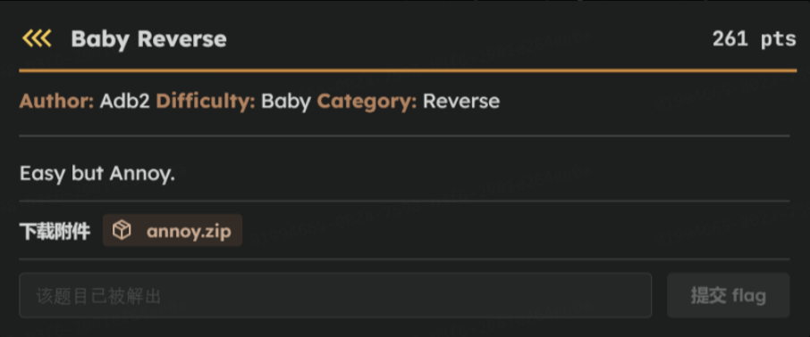
把題目給的 annoy.exe 丟到 IDA 看，老樣子，All u need is F5
main()
```cpp int __cdecl main(int argc, const char **argv, const char **envp) { char v4[112]; // [rsp+20h] [rbp-90h] BYREF char *v5; // [rsp+90h] [rbp-20h] char *v6; // [rsp+98h] [rbp-18h] char *v7; // [rsp+A0h] [rbp-10h] void *Block; // [rsp+A8h] [rbp-8h]_main(); printf(“Please input the password: “); scanf("%99s”, v4); Block = (void *)crypt_func1(v4); v7 = (char *)crypt_func2((char *)Block); v6 = (char *)crypt_func3(v7); v5 = (char *)crypt_func4(v6); check(v5); free(Block); free(v7); free(v6); free(v5); system(“pause”); return 0;
</details>
程式主流程:
1. 程式會讀入最多 99 字元到 v4，也就是要輸入的密碼
2. 然後進行加密/轉換流程，依序呼叫 crypt_func1 → crypt_func2 → crypt_func3 → crypt_func4
3. 最後丟結果到 check(v5)
4. 釋放記憶體
接下來去追 crypt_func1~4 的程式碼
<details close><summary>crypt_func1(char *a1)</summary>
```cpp
_BYTE *__fastcall crypt_func1(char *a1)
{
_BYTE *v2; // [rsp+20h] [rbp-10h]
int v3; // [rsp+28h] [rbp-8h]
int i; // [rsp+2Ch] [rbp-4h]
v3 = strlen(a1);
v2 = malloc(v3 + 1);
for ( i = 0; i < v3; ++i )
v2[i] = a1[i] ^ 0x11;
v2[v3] = 0;
return v2;
}
crypt_func1 : 把每個字元跟 0x11 做 XOR
Reverse : 再 XOR 一次 0x11
crypt_func2(char *a1)
_BYTE *__fastcall crypt_func2(char *a1)
{
char v1; // dl
_BYTE *v3; // [rsp+20h] [rbp-10h]
int v4; // [rsp+28h] [rbp-8h]
int i; // [rsp+2Ch] [rbp-4h]
v4 = strlen(a1);
v3 = malloc(v4 + 1);
for ( i = 0; i < v4; ++i )
{
if ( (i & 1) != 0 )
v1 = a1[i] + 38;
else
v1 = a1[i] - 17;
v3[i] = v1;
}
v3[v4] = 0;
return v3;
}
crypt_func2 : 根據索引奇偶做加/減
Reverse :
- 偶數位置：orig = enc + 17
- 奇數位置：orig = enc - 38
crypt_func3(char *a1)
_BYTE *__fastcall crypt_func3(char *a1)
{
_BYTE *v2; // [rsp+20h] [rbp-10h]
int v3; // [rsp+28h] [rbp-8h]
int i; // [rsp+2Ch] [rbp-4h]
v3 = strlen(a1);
v2 = malloc(v3 + 1);
for ( i = 0; i < v3; ++i )
{
if ( i % 3 )
{
if ( i % 3 == 1 )
v2[i] = a1[i] - 9;
else
v2[i] = a1[i] ^ 0x4D;
}
else
{
v2[i] = a1[i] + 5;
}
}
v2[v3] = 0;
return v2;
}
crypt_func3 : 根據 i mod 3 做不的處理
Reverse:
- i % 3 == 0 → orig = enc - 5
- i % 3 == 1 → orig = enc + 9
- i % 3 == 2 → orig = enc ^ 0x4D
crypt_func4(char *a1)
_BYTE *__fastcall crypt_func4(char *a1)
{
_BYTE *v2; // [rsp+20h] [rbp-60h]
int v3; // [rsp+28h] [rbp-58h]
int i; // [rsp+2Ch] [rbp-54h]
v3 = strlen(a1);
v2 = malloc(v3 + 1);
for ( i = 0; i < v3; ++i )
v2[i] = ror1(a1[i]);
v2[v3] = 0;
return v2;
}
crypt_func4 : rotate right 1 bit (ROR 1)
Reverse : 做 ROL 1
check()
__int64 __fastcall check(char *a1)
{
size_t v2; // rbx
char Str[8]; // [rsp+20h] [rbp-60h] BYREF
__int64 v4; // [rsp+28h] [rbp-58h]
__int64 v5; // [rsp+30h] [rbp-50h]
__int64 v6; // [rsp+38h] [rbp-48h]
__int64 v7; // [rsp+40h] [rbp-40h]
__int64 v8; // [rsp+48h] [rbp-38h]
int i; // [rsp+5Ch] [rbp-24h]
*(_QWORD *)Str = 0x3A9C9AACCD21BF36i64;
v4 = 0xC90DC22EE285A60Aui64;
v5 = 0xE2A4A68D9FAB9C27ui64;
v6 = 0xB50BEA04D18EB534ui64;
v7 = 0xBC2ECB8CEA1A51AEui64;
v8 = 0x294D2C4B35E9A4i64;
for ( i = 0; ; ++i )
{
v2 = i;
if ( v2 >= strlen(Str) )
break;
if ( Str[i] != a1[i] )
{
puts("Wrong!!!");
return 0i64;
}
}
puts("Correct!!!");
return 1i64;
}
簡單來說就是把輸入 (a1 = v5) 和內建的 Str 比對
話不多說，腳本企鵝啟動
solve.py 程式碼
# --- Reverse crypt_func4 (rol1) ---
def rol1(byte):
return ((byte << 1) & 0xFF) | (byte >> 7)
def reverse_crypt_func4(data):
return bytes([rol1(b) for b in data])
# --- Reverse crypt_func3 ---
def reverse_crypt_func3(data):
result = bytearray(len(data))
for i in range(len(data)):
if i % 3 == 0:
result[i] = (data[i] - 5) & 0xFF
elif i % 3 == 1:
result[i] = (data[i] + 9) & 0xFF
else:
result[i] = data[i] ^ 0x4D
return bytes(result)
# --- Reverse crypt_func2 ---
def reverse_crypt_func2(data):
result = bytearray(len(data))
for i in range(len(data)):
if i % 2 == 0: # Even index
result[i] = (data[i] + 17) & 0xFF
else: # Odd index
result[i] = (data[i] - 38) & 0xFF
return bytes(result)
# --- Reverse crypt_func1 ---
def reverse_crypt_func1(data):
return bytes([b ^ 0x11 for b in data])
# --- Execute decryption process ---
def decrypt(encrypted_flag):
# Step 1: Reverse crypt_func4
decrypted_4 = reverse_crypt_func4(encrypted_flag)
print(f"Decrypted 4 (Output of func3): {decrypted_4.hex()}")
# Step 2: Reverse crypt_func3
decrypted_3 = reverse_crypt_func3(decrypted_4)
print(f"Decrypted 3 (Output of func2): {decrypted_3.hex()}")
# Step 3: Reverse crypt_func2
decrypted_2 = reverse_crypt_func2(decrypted_3)
print(f"Decrypted 2 (Output of func1): {decrypted_2.hex()}")
# Step 4: Reverse crypt_func1
password_bytes = reverse_crypt_func1(decrypted_2)
final_password = password_bytes.decode('ascii', errors='ignore')
# Final fix: If your result contains '~', try replacing it
final_password = final_password.replace('~', '')
print("\n--- Decryption complete! ---")
print(f"The password is: {final_password}")
return final_password
# Final encrypted string from the 'check' function (in little-endian format)
encrypted_flag = bytes.fromhex('36BF21CDAC9A9C3A0AA685E22EC20DC9279CAB9F8DA6A4E234B58ED104EA0BB5AE511ACE8CCB2EBCA4E9354B2C4D29'.replace(' ', ''))
# Run the decryption process
decrypted_password = decrypt(encrypted_flag)
Basic Crackme

一樣把檔案丟進 IDA
main()
int __cdecl main(int argc, const char **argv, const char **envp)
{
const char *v4; // [rsp+20h] [rbp-128h]
char v5[256]; // [rsp+30h] [rbp-118h] BYREF
printf("Please input the key: ");
sub_140001740("%s", v5);
if ( sub_1400013A0(v5) )
{
v4 = sub_140001000(v5);
printf("CONGRATULATIONS, YOU PASSED!!\n");
printf("Here is your flag: %s\n", v4);
}
else
{
printf("SORRY, YOU FAILED!!!!!!!!!!\n");
}
return 0;
}
- v5[256] 讀入使用者輸入（
sub_140001740("%s", v5)）。 - 呼叫
sub_1400013A0(v5)：驗證函式，返回 unsigned int，非零表示驗證通過。 - 若通過，
呼叫 sub_140001000(v5)，回傳 const char *（很可能是解密後或生成的 flag 字串），然後 printf 出來，否則輸出失敗。
接下來就去找 sub_1400013A0(v5)
sub_1400013A0(const char *a1)
_BOOL8 __fastcall sub_1400013A0(const char *a1)
{
int j; // [rsp+20h] [rbp-48h]
int i; // [rsp+28h] [rbp-40h]
char *Destination; // [rsp+30h] [rbp-38h]
BOOL v5; // [rsp+3Ch] [rbp-2Ch]
int v6; // [rsp+40h] [rbp-28h]
int v7; // [rsp+44h] [rbp-24h]
int v8; // [rsp+48h] [rbp-20h]
_DWORD *Block; // [rsp+50h] [rbp-18h]
if ( strlen(a1) != 37 )
return 0i64;
Destination = (char *)j__malloc_base(0x28ui64);
strcpy_s(Destination, 0x28ui64, a1);
for ( i = 0; i < 3; ++i )
Destination[i + 37] = 3;
Block = j__malloc_base(0x28ui64);
for ( j = 0; j < 10; ++j )
{
v6 = (unsigned __int8)sub_140001240(Destination[4 * j + 1]) << 24;
v7 = ((unsigned __int8)sub_140001240(Destination[4 * j + 3]) << 16) | v6;
v8 = ((unsigned __int8)sub_140001240(Destination[4 * j + 2]) << 8) | v7;
Block[j] = (unsigned __int8)sub_140001240(Destination[4 * j]) | v8;
}
v5 = sub_1400012E0((__int64)Block) != 0;
free(Destination);
free(Block);
return v5;
}
- 輸入長度必須是 37（否則直接失敗）。
- Destination 被補成 40 bytes（在尾端追加三個字節 0x03），所以接下來的 10 個 4-byte groups（總共 40 bytes）都會被處理。
- 每 4 個字元會經過 sub_140001240（一個 byte->byte 的轉換函式），然後按特殊順序組成一個 32-bit 整數放入 Block[j]。
- 最後 Block（10 個 32-bit，合計 40 bytes）被交給 sub_1400012E0 做最終驗證；若該函式回傳非 0，則驗證成功。
這邊要注意字節的順序 :
- Block[j] 的最低位元組 (= byte0) =
sub_140001240(Destination[4*j + 0]) - 第 1 個位元組 (= byte1) =
sub_140001240(Destination[4*j + 2])（因為它是被左移 8 位放在 bits8-15） - 第 2 個位元組 (= byte2) =
sub_140001240(Destination[4*j + 3])（left « 16） - 第 3 個位元組 (= byte3) =
sub_140001240(Destination[4*j + 1])（left « 24）
總而言之就是 : 每組 4 字元 (c0 c1 c2 c3) 經過 sub_140001240 後會以順序 [c0, c2, c3, c1] 放入 32-bit（從低位到高位）
接下來要繼續追 sub_140001240、sub_1400012E0
sub_140001240(char a1)
__int64 __fastcall sub_140001240(char a1)
{
char v2[16]; // [rsp+0h] [rbp-28h]
v2[0] = 0;
v2[1] = 8;
v2[2] = 4;
v2[3] = 12;
v2[4] = 2;
v2[5] = 10;
v2[6] = 6;
v2[7] = 14;
v2[8] = 1;
v2[9] = 9;
v2[10] = 5;
v2[11] = 13;
v2[12] = 3;
v2[13] = 11;
v2[14] = 7;
v2[15] = 15;
return (16 * (unsigned __int8)v2[a1 & 0xF]) | (unsigned int)(unsigned __int8)v2[a1 >> 4];
}
sub_140001240 : 把輸入字節的高/低半位元組（nibble）各自透過一個長度 16 的置換表 v2 映射，再把 low-mapped 放到高位（乘 16），high-mapped 放到低位
sub_1400012E0(__int64 a1)
__int64 __fastcall sub_1400012E0(__int64 a1)
{
int i; // [rsp+0h] [rbp-48h]
int v3[10]; // [rsp+8h] [rbp-40h]
v3[0] = -433789332;
v3[1] = 40534546;
v3[2] = 1815012958;
v3[3] = -695967214;
v3[4] = 1819172522;
v3[5] = -1396925846;
v3[6] = -429986636;
v3[7] = -324766550;
v3[8] = -1031501274;
v3[9] = -1061109718;
for ( i = 0; i < 10; ++i )
{
if ( *(_DWORD *)(a1 + 4i64 * i) != v3[i] )
return 0i64;
}
return 1i64;
}
sub_1400012E0：把 Block 與一組常數 v3[0..9] 比對，完全相等才回傳成功
最後來看 sub_140001000，他是產生 flag 的函式
sub_140001000(const char *a1)
_BYTE *__fastcall sub_140001000(const char *a1)
{
int i; // [rsp+20h] [rbp-58h]
int v3; // [rsp+24h] [rbp-54h]
_BYTE *v4; // [rsp+28h] [rbp-50h]
int v5; // [rsp+30h] [rbp-48h]
char v6[22]; // [rsp+38h] [rbp-40h]
char v7[18]; // [rsp+4Eh] [rbp-2Ah] BYREF
v6[0] = 64;
v6[1] = 1;
v6[2] = 86;
v6[3] = 74;
v6[4] = 39;
v6[5] = 16;
v6[6] = 6;
v6[7] = 5;
v6[8] = 1;
v6[9] = 102;
v6[10] = 87;
v6[11] = 21;
v6[12] = 60;
v6[13] = 14;
v6[14] = 8;
v6[15] = 22;
v6[16] = 61;
v6[17] = 79;
v6[18] = 20;
v6[19] = 17;
v6[20] = 103;
v6[21] = 5;
qmemcpy(v7, "8baW", 4);
v7[4] = 127;
v7[5] = 37;
v7[6] = 37;
v7[7] = 114;
v7[8] = 26;
v7[9] = 85;
v7[10] = 60;
v7[11] = 28;
v7[12] = 11;
v7[13] = 18;
v7[14] = 41;
v4 = j__malloc_base(0x26ui64);
v3 = 0;
v5 = strlen(a1);
while ( v3 < 37 )
{
v4[v3] = a1[v3 % v5] ^ v6[v3];
++v3;
}
v4[v3] = 0;
for ( i = 0; i < 37; ++i )
{
if ( (char)v4[i] < 65 || (char)v4[i] > 90 )
{
if ( (char)v4[i] >= 97 && (char)v4[i] <= 122 )
v4[i] = ((char)v4[i] - 84) % 26 + 97;
}
else
{
v4[i] = ((char)v4[i] - 52) % 26 + 65;
}
}
return v4;
}
- 有兩個陣列 v6（22 bytes）與 v7（18 bytes）放在 stack 上，總共 40 bytes 的 XOR key。
- v4 = malloc(0x26)（38 bytes 空間），v5 = strlen(a1)。
- 迴圈 for v3=0; v3<37; ++v3: v4[v3] = a1[v3 % v5] ^ v6[v3]; 注意：v6[v3] 超過 22 會從 v7 讀（因為 v6 與 v7 在 stack 上緊鄰）。
- 結束後對 v4 的每個字元： 若在 A-Z（65..90），則 v4[i] = ((v4[i] - 52) % 26) + 65 若在 a-z（97..122），則 v4[i] = ((v4[i] - 84) % 26) + 97 否則保留
- 回傳 v4（C 字串），main() 會 printf 出來。
簡單總結一下題目流程 :
- 使用者輸入 a1（string，長度 37）進入 main()。
- main() 呼叫 sub_1400013A0(a1) 做驗證：
- sub_1400013A0 會把 a1（37 bytes）複製到 Destination（40 bytes，尾端補三個 0x03），
- 以每 4 bytes 為一組，對每個 byte 呼叫 sub_140001240（byte -> byte 的 mapping），把 4 個映射後的 byte 組成一個 32-bit，產生 Block[0..9]。
- 再把 Block 與 sub_1400012E0 中的常數 v3[0..9] 比較，完全相等才通過。
- 通過驗證後 main() 呼叫 sub_140001000(a1)，該函式會對 a1 做 XOR 與字符範圍映射，回傳 flag-like 字串（會被 printf 印出）。
Rerverse 步驟:
sub_140001240(char a1)
- 建 inv_v2：把 v2 的值對應到原 nibble（inv_v2[mapped]=original_nibble）。
- 給定 mapped_byte： mapped_high_nibble = mapped_byte & 0xF mapped_low_nibble = mapped_byte » 4 原 low nibble = inv_v2[mapped_high_nibble] 原 high nibble = inv_v2[mapped_low_nibble] 原 byte = (orig_high « 4) | orig_low
sub_1400013A0(const char *a1)
- 讀出 sub_1400012E0 裡的 10 個常數 v3[0..9]。
- 把每個常數轉為 4-bytes little-endian：b0,b1,b2,b3。
- 根據上面的排列，針對每個 mapped byte bi 用 sub240 逆推得到原始 Destination 對應 byte（注意索引是 D[4j+0], D[4j+1], D[4j+2], D[4j+3] 的特殊對應）。
- 拼出 40 bytes Destination，檢查 tail 是否為 \x03\x03\x03（驗證成功）。
- Destination[:37] 即 key。
sub_1400012E0(__int64 a1)
- 從反編譯複製 v6 與 v7（v7 緊接 v6 的值）。
- 把 Destination[:37] 當作 input key，逐字做 XOR，然後執行字元範圍映射得到最後輸出。
腳本企鵝 :
solve.py
from typing import List
# ---- 反映射表（sub_140001240 中的 v2） ----
V2 = [0,8,4,12,2,10,6,14,1,9,5,13,3,11,7,15]
def sub240_encode(byte_val: int) -> int:
"""模擬 sub_140001240 的行為：把輸入 byte 的 low/high nibble 各自映射後合成"""
b = byte_val & 0xFF
low = b & 0xF
high = (b >> 4) & 0xF
return (16 * V2[low]) | V2[high]
def invert_sub240_byte(target: int) -> int:
"""
已知 sub240_encode(orig) == target (0..255)，反推 orig（0..255）。
由於 sub240 操作是對 nibble 各自做置換，這個反向是唯一的。
"""
# 反向表：從映射值 -> 原 nibble
inv = {V2[i]: i for i in range(16)}
lo_mapped = (target >> 4) & 0xF
hi_mapped = (target & 0xF)
# 將 mapped nibble 轉回原 nibble
orig_low = inv[lo_mapped]
orig_high = inv[hi_mapped]
return (orig_high << 4) | orig_low
# ---- sub_1400012E0 中的常數 v3 ----
V3 = [
-433789332,
40534546,
1815012958,
-695967214,
1819172522,
-1396925846,
-429986636,
-324766550,
-1031501274,
-1061109718
]
# 轉成 unsigned 32-bit 表示（對應 memory bytes 的小端表示）
V3U = [x & 0xFFFFFFFF for x in V3]
def u32_to_bytes_le(u: int) -> List[int]:
"""把 32-bit unsigned 整數轉成 4-bytes 的 little-endian list"""
return [(u >> (8*i)) & 0xFF for i in range(4)]
# ---- 還原 Destination (40 bytes) 的函式 ----
def reconstruct_destination_from_v3(v3u_list: List[int]) -> bytes:
"""
每一個 v3u 是 Block[j] 的 32-bit 小端整數。
Block[j] 的 bytes (low..high) 對應於:
[ sub240(D[4*j + 0]),
sub240(D[4*j + 2]),
sub240(D[4*j + 3]),
sub240(D[4*j + 1]) ]
我們對每個 byte 反推 sub240 的原始輸入，並放回 Destination 對應位置。
最後 Destination 長度為 40 bytes（10 * 4）。
"""
dest = [0] * 40
for j, val in enumerate(v3u_list):
b = u32_to_bytes_le(val) # 4 bytes in little-endian order: b0,b1,b2,b3
# 按 sub_1400013A0 裡的排列把反推後的原始 bytes 放回 destination
# Block[j] bytes correspond to: [D[4*j+0]mapped, D[4*j+2]mapped, D[4*j+3]mapped, D[4*j+1]mapped]
mapped0, mapped1, mapped2, mapped3 = b[0], b[1], b[2], b[3]
# 反推 mapped -> 原 bytes
orig0 = invert_sub240_byte(mapped0)
orig2 = invert_sub240_byte(mapped1)
orig3 = invert_sub240_byte(mapped2)
orig1 = invert_sub240_byte(mapped3)
dest[4*j + 0] = orig0
dest[4*j + 1] = orig1
dest[4*j + 2] = orig2
dest[4*j + 3] = orig3
return bytes(dest)
# ---- sub_140001000 的模擬（用來產生 flag） ----
# v6 (22 bytes) 然後 v7 (18 bytes) 在 stack 上緊接 v6。程式對 Destination 前 37 bytes 做 XOR。
V6 = [64,1,86,74,39,16,6,5,1,102,87,21,60,14,8,22,61,79,20,17,103,5]
# v7 初始的前面 4 bytes 來自 "8baW"，後面依反編譯賦值
V7 = [ord(c) for c in "8baW"] + [127,37,37,114,26,85,60,28,11,18,41]
# pad v7 到 18 bytes if needed
while len(V7) < 18:
V7.append(0)
V6V7 = V6 + V7 # 22 + 18 = 40 bytes, 對應 Destination 的前 40 bytes 用於 XOR
def sub_140001000_simulate(input_key: str) -> str:
"""
模擬 sub_140001000: allocate v4, 然後對前 37 bytes：
v4[i] = a1[i % len(a1)] ^ (v6_or_v7[i]) (a1 以 bytes 處理)
之後對 v4 每字元做範圍調整：
若 65..90 -> v4[i] = ((v4[i] - 52) % 26) + 65
若 97..122 -> v4[i] = ((v4[i] - 84) % 26) + 97
回傳作為字串（latin1 解碼，與 C 的 1-byte semantics 對齊）
"""
a_bytes = input_key.encode('latin1') # 保留原始 byte 值 0..255
n = len(a_bytes)
v4 = bytearray(40) # allocate at least 37+1
for i in range(37):
ch = a_bytes[i % n]
xor_with = V6V7[i] & 0xFF
v4[i] = ch ^ xor_with
# apply post-processing
for i in range(37):
c = v4[i]
if 65 <= c <= 90:
v4[i] = ((c - 52) % 26) + 65
elif 97 <= c <= 122:
v4[i] = ((c - 84) % 26) + 97
else:
# leave unchanged
v4[i] = c
return v4[:37].decode('latin1', errors='replace')
# ---- 驗證函式（模擬 sub_1400013A0 的 Block 生成與比對 sub_1400012E0） ----
def compute_block_from_destination(dest40: bytes) -> List[int]:
"""給定 Destination(40 bytes)，模擬 sub_1400013A0 中 Block 的生成（小端 u32 list）"""
if len(dest40) != 40:
raise ValueError("dest must be 40 bytes")
block = []
for j in range(10):
# Block[j] compositon:
# bytes: b0 = sub240(dest[4*j + 0])
# b1 = sub240(dest[4*j + 2])
# b2 = sub240(dest[4*j + 3])
# b3 = sub240(dest[4*j + 1])
b0 = sub240_encode(dest40[4*j + 0])
b1 = sub240_encode(dest40[4*j + 2])
b2 = sub240_encode(dest40[4*j + 3])
b3 = sub240_encode(dest40[4*j + 1])
# little endian pack
val = b0 | (b1 << 8) | (b2 << 16) | (b3 << 24)
block.append(val & 0xFFFFFFFF)
return block
def check_key(key37: str) -> bool:
"""
檢查 key 是否滿足 sub_1400013A0 -> sub_1400012E0
1) Destination = key (37 bytes) + [3,3,3]
2) compute Block
3) check Block == V3U
"""
if len(key37) != 37:
return False
dest = key37.encode('latin1') + bytes([3,3,3])
block = compute_block_from_destination(dest)
return block == V3U
# ---- 主流程：還原 Destination、取得 key（前 37 bytes）、並模擬 sub_140001000 得到 flag ----
def main():
dest40 = reconstruct_destination_from_v3(V3U)
print("Destination (hex):", dest40.hex())
key37 = dest40[:37].decode('latin1', errors='replace')
tail = dest40[37:]
print("Key (37 bytes):", key37)
print("Tail bytes (should be three 0x03):", tail)
print("check_key(key)? ->", check_key(key37))
out = sub_140001000_simulate(key37)
print("sub_140001000 output:", out)
if __name__ == "__main__":
main()
output :
Destination (hex): 36676724484041567a366774486b462155367a765635593d2d67377a55372e256443512154030303
Key (37 bytes): 6gg$H@AVz6gtHkF!U6zvV5Y=-g7zU7.%dCQ!T
Tail bytes (should be three 0x03): b'\x03\x03\x03'
check_key(key)? -> True
sub_140001000 output: is1abCTF{C0ngrA7ulat10n_Y0U_cR4cK_M3}
Half-Baked Image Format
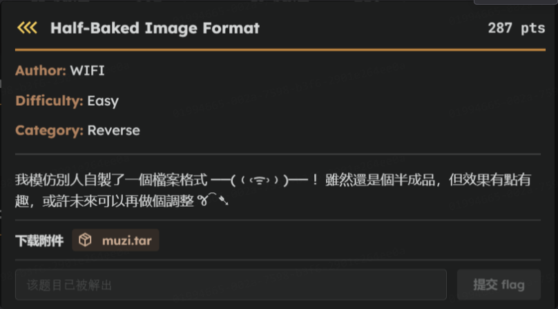
題目給了一個 flag.muzi 和 muzi.py
muzi.py 程式碼
from PIL import Image
import numpy as np
import crc8
def main():
inp = input("""
Welcome to the is1ab Image Program
It can convert images to MUZIs
It will also display MUZIs
[1] Convert Image to MUZI
[2] Display MUZI
""")
match inp:
case "1":
start_conv()
#case "2":
#display() #TODO: Add
'''
⣿⣿⣿⣿⣿⣿⣿⣿⣿⣿⣿⣿⣿⣿⣿⣿⣿⣿⣿⣿⣿⣿⣿⣿⣿⣿⣿⣿⣿⣿⣿⣿⣿⣿⣿⣿⣿⣿⣿⣿⣿⣿⣿⣿⣿⣿⣿⣿⣿⣿
⣿⣿⣿⣿⣿⣿⣿⣿⣿⣿⣿⣿⣿⣿⣿⣿⣿⣀⣀⣀⣀⣀⣀⣀⣀⣀⣿⣿⣿⣿⣿⣿⣿⣿⣿⣿⣿⣿⣿⣿⣿⣿⣿⣿⣿⣿⣿⣿⣿⣿
⣿⣿⣿⣿⣿⣿⣿⣿⣿⣿⣿⣿⣀⡀⠂⠁⠁⠁⠁⠂⠂⠂⠂⠁⠁⠁⠁⠁⠁⠂⠄⡀⣿⣿⣿⣿⣿⣿⣿⣿⣿⣿⣿⣿⣿⣿⣿⣿⣿⣿
⣿⣿⣿⣿⣿⣿⣿⣿⣿⣀⠂⠁⠁⠂⡀⣀⣿⣿⣿⣿⣿⣿⣿⣿⣿⣿⣿⣀⡀⠄⠂⠁ ⠁⠂⡀⣿⣿⣿⣿⣿⣿⣿⣿⣿⣿⣿⣿⣿⣿
⣿⣿⣿⣿⣿⣿⣀⡀⠁⠂⡀⣀⣿⣿⣿⣿⣿⣿⣿⣿⣿⣿⣿⣿⣿⣿⣿⣿⣿⣿⣿⣿⣀⠄⠁ ⠁⣿⣿⣿⣿⣿⣿⣿⣿⣿⣿⣿⣿
⣿⣿⣿⣿⣿⡀⠁⠂⣀⣿⣿⣿⣿⣿⣿⣿⣿⣿⣿⣿⣿⣿⣿⣿⣿⣿⣿⣿⣿⣿⣿⣿⣿⣿⣿⣿⡀⡀⣿⣿⣿⣿⣿⣿⣿⣿⣿⣿⣿⣿
⣿⣿⣿⣿⣿⣿⣿⣿⣿⣿⣿⣿⣿⣀⡀⠄⠄⠄⠄⠄⠄⠄⠄⡀⡀⣀⣿⣿⣿⣿⣿⣿⣿⣿⣿⣿⣿⣿⣿⣿⣿⣿⣿⣿⣿⣿⣿⣿⣿⣿
⣿⣿⣿⣿⣿⣿⣿⣿⣿⣿⣿⡀⠂⠂⠄⠄⠄⡀⡀⠄⠄⠄⠄⠂⠂⠁⠁⠁⠂⠄⣀⣿⣿⣿⣿⣿⣿⣿⣿⣿⣿⣿⣿⣿⣿⣿⣿⣿⣿⣿
⣿⣿⣿⣿⣿⣿⣿⣿⣿⣿⠄⠄⣿⣿⣿⣿⣿⣿⣿⣿⣿⣿⣿⣿⣿⣿⣿⡀⠄⠂⠁⠁⠄⣀⣿⣿⣿⣿⣿⣿⣿⣿⣿⣿⣿⣿⣿⣿⣿⣿
⣿⣿⣿⣿⣿⣿⣿⣿⣿⣿⣿⣿⣿⣿⣿⣿⣿⣿⣿⣿⣿⣿⣿⣿⣿⣿⣿⣿⣿⣿⣀⠄ ⠁⣿⣿⣿⣿⣿⣿⣿⣿⣿⣿⣿⣿⣿⣿⣿⣿
⣿⣿⣿⣿⣿⣿⣿⣿⣿⣿⣿⣿⣿⣿⣿⣿⣿⣿⣿⣿⣿⣿⣿⣿⣿⣿⣿⣿⣿⣿⣿⣿⣿⣿⣿⣿⣿⣿⣿⣿⣿⣿⣿⣿⣿⣿⣿⣿⣿⣿
⣿⣿⣿⣿⣿⣿⣿⣿⣿⣿⣿⣿⣿⣿⣿⣿⡀⠂⠂⠂⠂⠂⠂⠂⠄⡀⣀⣿⣿⣿⣿⣿⣿⣿⣿⣿⣿⣿⣿⣿⣿⣿⣿⣿⣿⣿⣿⣿⣿⣿
⣿⣿⣿⣿⣿⣿⣿⣿⣿⣿⣿⣿⣿⣿⡀⠁⠂⡀⡀⡀⡀⡀⡀⠄⠄⠁ ⠂⣀⣿⣿⣿⣿⣿⣿⣿⣿⣿⣿⣿⣿⣿⣿⣿⣿⣿⣿⣿⣿
⣿⣿⣿⣿⣿⣿⣿⣿⣿⣿⣿⣿⣿⣿⠄⣿⣿⣿⣿⣿⣿⣿⣿⣿⣿⣿⣿⡀⠁ ⠄⣿⣿⣿⣿⣿⣿⣿⣿⣿⣿⣿⣿⣿⣿⣿⣿⣿⣿⣿
⣿⣿⣿⣿⣿⣿⣿⣿⣿⣿⣿⣿⣿⣿⣿⣿⣿⣿⣿⣿⣿⣿⣿⣿⣿⣿⣿⣿⣿⣀⣿⣿⣿⣿⣿⣿⣿⣿⣿⣿⣿⣿⣿⣿⣿⣿⣿⣿⣿⣿
⣿⣿⣿⣿⣿⣿⣿⣿⣿⣿⣿⣿⣿⣿⣿⣿⣿⣿⣿⣿⣿⣿⣿⣿⣿⣿⣿⣿⣿⣿⣿⣿⣿⣿⣿⣿⣿⣿⣿⣿⣿⣿⣿⣿⣿⣿⣿⣿⣿⣿
⣿⣿⣿⣿⣿⣿⣿⣿⣿⣿⣿⣿⣿⣿⣿⣿⣿⣿⣿⡀⠁⠄⡀⣀⣿⣿⣿⣿⣿⣿⣿⣿⣿⣿⣿⣿⣿⣿⣿⣿⣿⣿⣿⣿⣿⣿⣿⣿⣿⣿
⣿⣿⣿⣿⣿⣿⣿⣿⣿⣿⣿⣿⣿⣿⣿⣿⣿⣿⣿⣀⠄⠂⠁⠁⣿⣿⣿⣿⣿⣿⣿⣿⣿⣿⣿⣿⣿⣿⣿⣿⣿⣿⣿⣿⣿⣿⣿⣿⣿⣿
⣿⣿⣿⣿⣿⣿⣿⣿⣿⣿⣿⣿⣿⣿⣿⣿⣿⣿⣿⣿⣿⣿⣿⣿⣿⣿⣿⣿⣿⣿⣿⣿⣿⣿⣿⣿⣿⣿⣿⣿⣿⣿⣿⣿⣿⣿⣿⣿⣿⣿
⣿⣿⣿⣿⣿⣿⣿⣿⣿⣿⣿⣿⣿⣿⣿⣿⣿⣿⣿⣿⣿⣿⣿⣿⣿⣿⣿⣿⣿⣿⣿⣿⣿⣿⣿⣿⣿⣿⣿⣿⣿⣿⣿⣿⣿⣿⣿⣿⣿⣿
'''
case _:
return 0
return 0
def start_conv():
file = input("Enter the path to your image you want converted to a MUZI file:\n")
out = input("Enter the path you’d like to write the MUZI to:\n")
img = Image.open(file)
w, h = img.size
write = [
b'\x4D', b'\x55', b'\x5A', b'\x49', b'\x00', b'\x01', b'\x00', b'\x02'
]
for x in w.to_bytes(4):
write.append(x.to_bytes(1))
for y in h.to_bytes(4):
write.append(y.to_bytes(1))
write.append(b'\x57')
write.append(b'\x49')
write.append(b'\x46')
write.append(b'\x49')
for i in range(h):
dat = [b'\x44',b'\x41',b'\x54',b'\x52']
for j in range(w):
dat.append(img.getpixel((j,i))[0].to_bytes(1))
dat.append(getCheck(dat[4:]))
for wa in dat:
write.append(wa)
for i in range(h):
dat = [b'\x44',b'\x41',b'\x54',b'\x47']
for j in range(w):
dat.append(img.getpixel((j,i))[1].to_bytes(1))
dat.append(getCheck(dat[4:]))
for wa in dat:
write.append(wa)
for i in range(h):
dat = [b'\x44',b'\x41',b'\x54',b'\x42']
for j in range(w):
dat.append(img.getpixel((j,i))[2].to_bytes(1))
dat.append(getCheck(dat[4:]))
for wa in dat:
write.append(wa)
write.append(b'\x44')
write.append(b'\x41')
write.append(b'\x54')
write.append(b'\x45')
with open(out, "ab") as f:
for b in write:
f.write(b)
return 0
def getCheck(datr):
dat = ''
for w in datr:
dat+=chr(int.from_bytes(w))
#print(datr)
#print(dat.encode())
return int.to_bytes(int(crc8.crc8(dat.encode()).hexdigest(),base=16),1)
if __name__ == '__main__':
main()
基本上就只是轉換圖片 → MUZI
所以解題方向 :
- 先讀取 .muzi 檔案結構
- 確認 header MUZI…
- 取出寬高
- 依照 “DATR”/“DATG”/“DATB” 區塊重建 RGB 三個通道
- 組合回圖片
- 把 R、G、B 三個矩陣拼成 Image.fromarray(np.dstack((R,G,B)))。
- 存成 .png
腳本企鵝出動!
solve.py 程式碼
from PIL import Image
import numpy as np
def read_muzi(path):
with open(path, "rb") as f:
data = f.read()
assert data.startswith(b"MUZI"), "Not a MUZI file"
# 讀取寬高
w = int.from_bytes(data[8:12], "big")
h = int.from_bytes(data[12:16], "big")
# 找到 "WIFI" 後開始
offset = data.find(b"WIFI") + 4
R = np.zeros((h, w), dtype=np.uint8)
G = np.zeros((h, w), dtype=np.uint8)
B = np.zeros((h, w), dtype=np.uint8)
def read_channel(tag, arr, off):
for i in range(h):
assert data[off:off+4] == tag
off += 4
row = data[off:off+w]
off += w
crc = data[off] # 校驗碼
off += 1
arr[i] = np.frombuffer(row, dtype=np.uint8)
return off
offset = read_channel(b"DATR", R, offset)
offset = read_channel(b"DATG", G, offset)
offset = read_channel(b"DATB", B, offset)
return np.dstack((R,G,B))
if __name__ == "__main__":
img = read_muzi("flag.muzi")
Image.fromarray(img).save("flag.png")
print("Saved flag.png")
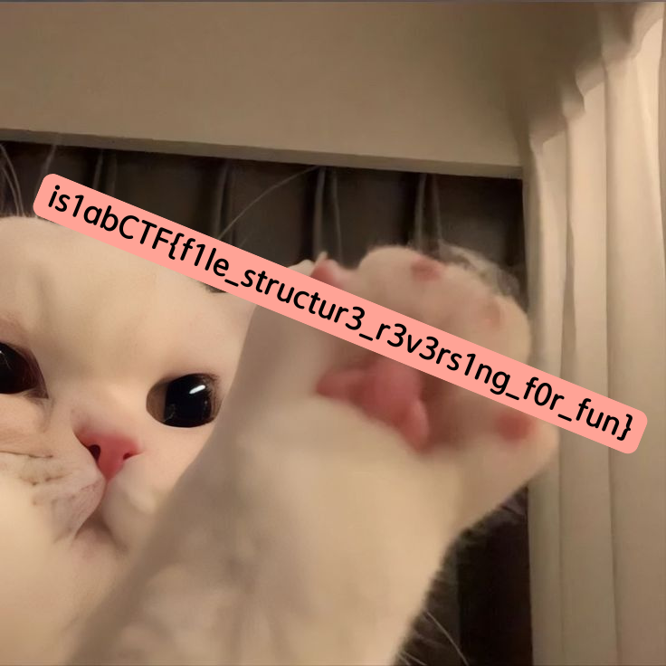
卯咪可愛
Web
好了好了，Web 狗要來了
BabyShell
謝謝家維學長的栽培，沒記錯的話打完 pico 的第一題 Web 就是這題
對沒錯我在水
EasySQLi
連線後會看到登入頁面
盲猜帳密為 guest/guest
得到下圖
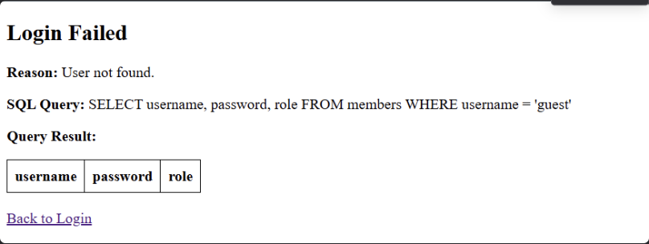
第一次看到這麼清楚把 Query 弄出來的，真的是 easy
在 SQLite，所有資料表結構資訊都存放在一個特殊的系統表 sqlite_master 裡。
sqlite_master 裡的常用欄位有：
- type → 是 table / index / view
- name → 物件名稱（例如表名）
- sql → 建表語句
所以把 name 塞到可見的欄位，就能在 username / password / role 三欄裡看到所有資料表的名稱、類型、建表語法。
在帳號的地方輸入 : ' UNION SELECT name, type, sql FROM sqlite_master WHERE type='table' --
密碼隨意(1234)
-- 的目的是把後面註解掉
得到下圖
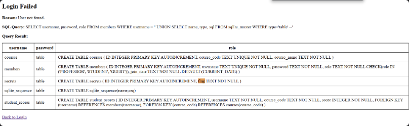
在 secret 表看到 flag 的字
但因為有三欄，所以其他兩欄也要填上去
帳號輸入 : ' UNION SELECT flag, NULL, NULL FROM secrets --
密碼一樣 1234
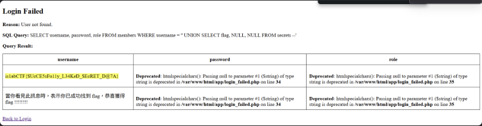
這才是真的秒解，web2pdf 才不是55555
Easy web2pdf
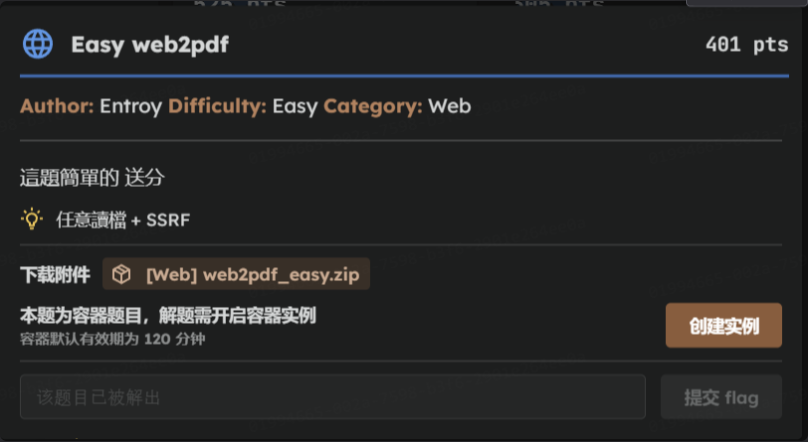 這題純粹是我鬼打牆太久，睡一覺隔天醒來就跳出自己的迴圈了
證明睡覺真的很重要
總之，連線後打開網頁如圖
先看幾個主要的程式碼
server.py 程式碼
import sys
import redis
import json
import pycurl
import base64
import uuid
from io import BytesIO
from flask import Flask, request, Response, session
from models import *
app = Flask(__name__)
app.secret_key = b'\x53\x3b\xce\xf1\x23\x2d\xab\xc2\x11\x23'
@app.route("/api/")
def ping():
version = "{}.{}".format(sys.version_info.major, sys.version_info.minor)
message = "Flask running on Python {}".format(
version
)
return message
@app.route("/api/login", methods=['GET'])
def login():
if 'id' not in session:
session['id'] = str(uuid.uuid4())
return ''
else:
return json.dumps({'msg':'Already logged in'})
@app.route("/api/docs", methods=['GET', 'POST'])
def manageDocs():
if 'id' not in session:
return json.dumps({'msg':'Invalid session'})
if request.method == 'GET':
docs = Document.list(session['id'])
return json.dumps(docs)
elif request.method == 'POST':
newDoc = Document(request.form['url'], session['id'])
return json.dumps({'msg':'OK', 'url':'/api/download?id=' + newDoc.fileid})
@app.route("/api/download", methods=['GET'])
def downloadFile():
file_id = request.args.get('id','')
server = request.args.get('server','')
#for testing purposes only
if request.remote_addr != '127.0.0.1':
server = 'http://127.0.0.1'
if file_id!='':
filename = str(int(file_id)) + '.pdf'
response_buf = BytesIO()
crl = pycurl.Curl()
crl.setopt(crl.URL, server + '/api/file?filename=' + filename)
crl.setopt(crl.WRITEDATA, response_buf)
crl.perform()
crl.close()
file_data = json.loads(response_buf.getvalue().decode('utf8')).get('file','')
file_data = base64.b64decode(file_data)
resp = Response(file_data)
resp.headers['Content-Type'] = 'text/html'
return resp
else:
return json.dumps({'msg':'Invalid file id'})
# The file storage will soon be migrated to a different server
@app.route("/api/file", methods=['GET'])
def getFile():
if request.remote_addr != '127.0.0.1':
return json.dumps({'msg':'Remote access disallowed'})
else:
PDF_DIR = '/app/web/pdfs/'
filename = PDF_DIR + request.args.get('filename', '')
try:
data = open(filename, 'rb').read()
data = base64.b64encode(data).decode('utf8')
return json.dumps({'msg':'ok', 'file':data})
except:
return json.dumps({'msg':'Invalid filename'})
if __name__ == "__main__":
app.run(host="0.0.0.0", debug=True, port=8001)
model.py 程式碼
import time
import redis
from selenium import webdriver
import os
db = redis.Redis()
PDF_PATH = '/app/web/pdfs/'
class Document:
@classmethod
def __init__(self, url, sid):
self.url = url
self.fileid = str(round(time.time() * 1000))
self.html2pdf(url)
self.save(sid)
@classmethod
def html2pdf(self, url):
driver = webdriver.PhantomJS(service_log_path='/dev/null')
try:
driver.get(url)
page_source = driver.page_source
temp_html_path = os.path.join(PDF_PATH, self.fileid + '.pdf')
with open(temp_html_path, 'w', encoding='utf-8') as f:
f.write(page_source)
except Exception as e:
print(f"Error processing {url}: {e}")
@classmethod
def save(self, sid):
if sid != '':
db.hset(sid, self.url, self.fileid)
db.expire(sid, 15 * 60) #refresh session
@staticmethod
def list(sid):
if sid != '':
docs = db.hgetall(sid)
docs = { key.decode(): '/api/download?id=' + val.decode() for key, val in docs.items() }
return docs
readflag.c 程式碼
#include <stdio.h>
#include <unistd.h>
int main(void) {
seteuid(0);
setegid(0);
setuid(0);
setgid(0);
char flag[256] = {0};
FILE* fp = fopen("/flag", "r");
if (!fp) {
perror("fopen");
return 1;
}
if (fread(flag, 1, 256, fp) < 0) {
perror("fread");
return 1;
}
puts(flag);
fclose(fp);
return 0;
}
Dockerfile 程式碼(部分)
# 處理 readflag 相關文件
COPY readflag.c /readflag.c
RUN echo 'flag{fake_flag}' > /flag
RUN chmod 0644 /flag && chown root:root /flag
RUN chmod 0444 /readflag.c && gcc /readflag.c -o /readflag
RUN chown root:root /readflag && chmod 4555 /readflag
簡單講一下流程 :
-
使用者先向伺服器 /api/login 取得 session id（存在 session 中）。
-
使用者呼叫 /api/docs：
- GET /api/docs：列出該 session 在 Redis 中儲存的文件（Document.list）。
- POST /api/docs：會建立一個 Document（由
models.py實作），傳入 url 與 session id。Document 會用 PhantomJS 去driver.get(url)抓取該 URL 的 page_source，然後把結果寫成一個 .pdf 檔。最後把該檔案 id 存到 Redis。
-
使用者向 /api/download?id=
下載該檔案： - downloadFile() 會把 file_id 轉成檔名（<int(file_id)>.pdf），然後透過 pycurl 去請求 server + ‘/api/file?filename=’ + filename，拿回 JSON 中 file 欄位的 base64 檔案內容，解 base64 後回傳給使用者。
- 若呼叫 /api/download 的連線不是來自 127.0.0.1（也就是大多數遠端使用者），程式會把 server 參數強制設成 http://127.0.0.1，也就是pycurl 會去向本機 (localhost) 的 /api/file 取得檔案。
-
本機上的 /api/file 路由只接受來自 127.0.0.1 的請求（
request.remote_addr == '127.0.0.1'） 然後會直接把 PDF_DIR + filename 做 open(…).read()，base64 回傳。 也就是說：一旦伺服器內部可以存到任意檔案在 PDF_DIR 下，/api/download → pycurl localhost:/api/file?filename=...會把該檔案以 base64 透過 JSON 讀回並最終回傳給遠端使用者。
原本有一個檢查機制 : request.remote_addr == '127.0.0.1'，只有伺服器自己才能 GET /api/file 讀檔，但伺服器會去打開我們在 URL 輸入的網址，把內容存成一個檔案，於是變成內部資料被伺服器當作可對外發送的東西
也就是常見的 SSRF
所以只要能讓 response 返回 {"msg": "ok", "file": data}
data 的值就是 flag 的 base64 結果
在解的時候試過很多沒必要的方法，像是 ngrok 上傳 html、file://協議等等
但其實只要讓 /api/docs 的 url 自己去讀到 /flag 的值，透過 /api/download 下載顯示就好
不過如果直接在 url 的地方輸入
http://127.0.0.1:<port>/api/file?filename=../../../flag
會出現 {"msg": "Remote access disallowed"}
或是網頁上 URL 的輸入框 http://127.0.0.1:<port>/api/file?filename=../../../flag
也只會返回空白畫面
因為他的請求是來自你的 port，不是 127.0.0.1，所以 /api/download 在抓 filename 的時候抓不到東西，自然就回傳空白畫面
兩個重點:
request.remote_addr是來自127.0.0.1server.py程式碼的 76、77 行顯示 filename 會串接成/app/web/pdfs/+filename的參數 所以要讓他回到根目錄去找 flag (根據readflag.c得知 flag 在根目錄底下，再根據Dockerfile知道 flag 被寫在 /flag 裡面)
在網頁的 URL 輸入 payload 在下載就可以得到 base64 過的 flag 了
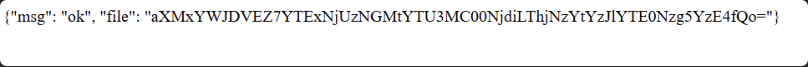